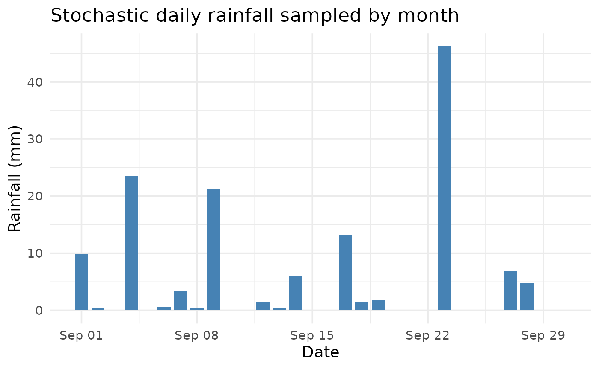
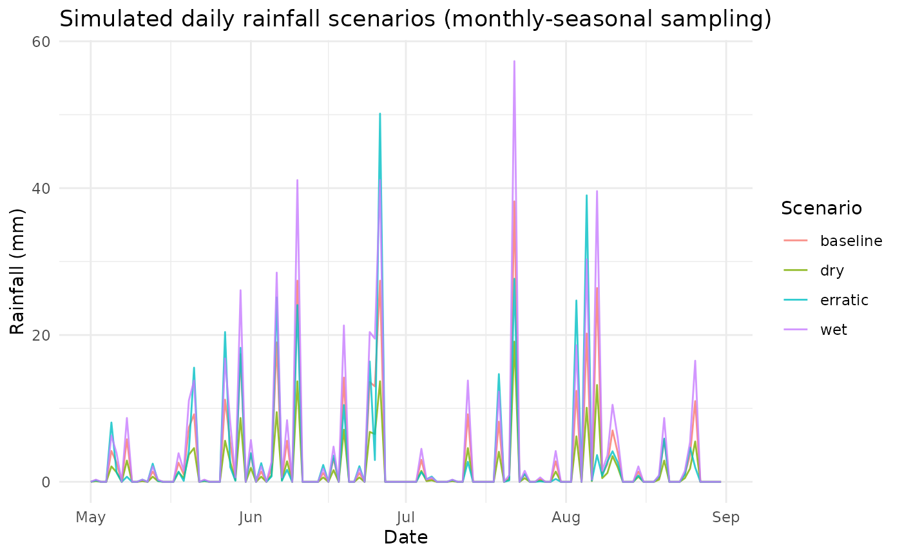

Purpose
In many ecological and climate-driven models, rainfall is a highly
variable input that exhibits strong monthly seasonality but weak daily
autocorrelation. To preserve this seasonality while introducing
stochastic variability, the function
sample_rainfall_by_month() resamples daily rainfall values
from the same calendar month across multiple observed years.
This approach maintains each month’s empirical rainfall distribution — including the fraction of dry days — and generates realistic synthetic daily rainfall series for use in simulation models.
Example
data(weather_nl)
# Define the simulation period
dates <- seq.Date(as.Date("2014-09-01"), by = "day", length.out = 30)
# Sample stochastic rainfall from monthly distributions
rain_sim <- sample_rainfall_by_month(dates, weather_nl)
# Combine with dates for inspection
rain_df <- data.frame(date = dates, rain_sim_mm = rain_sim)
head(rain_df, 10)
#> date rain_sim_mm
#> 1 2014-09-01 9.8
#> 2 2014-09-02 0.4
#> 3 2014-09-03 0.0
#> 4 2014-09-04 23.6
#> 5 2014-09-05 0.0
#> 6 2014-09-06 0.6
#> 7 2014-09-07 3.4
#> 8 2014-09-08 0.4
#> 9 2014-09-09 21.2
#> 10 2014-09-10 0.0Visualization
ggplot(rain_df, aes(x = date, y = rain_sim_mm)) +
geom_col(fill = "steelblue", width = 0.8) +
labs(title = "Stochastic daily rainfall sampled by month",
x = "Date", y = "Rainfall (mm)") +
theme_minimal(base_size = 14)
Notes
- Preserves seasonality: sampling pools are month-specific.
- Dry-day frequency: automatically preserved via empirical distributions.
- Reproducibility: use seed for consistent output.
- Flexible input: accepts Date or numeric day offsets (with origin).
- Supports arbitrary column names: tries to standardize via normalize_weather_names().
Reproducibility check
# Run twice with same seed — identical results
sim1 <- sample_rainfall_by_month(dates, weather_nl, seed = 101)
sim2 <- sample_rainfall_by_month(dates, weather_nl, seed = 101)
identical(sim1, sim2)
#> [1] TRUEThis workflow provides a lightweight, nonparametric way to propagate hydroclimatic variability into climate or population dynamics models.
Rainfall scenarios for modeling
We can generate stochastic daily rainfall preserving monthly seasonality by sampling within-month empirical distributions across years, then applying simple scenario multipliers.
set.seed(2025)
sim <- simulate_rainfall_scenarios(
weather_nl,
times = seq(as.Date("2011-05-01"), as.Date("2011-08-31"), by = "day"),
scenarios = c("baseline","dry","wet","erratic"),
plot = TRUE
)
knitr::kable(head(sim$series), caption = "First rows of simulated rainfall series")| date | month | scenario | rain_mm |
|---|---|---|---|
| 2011-05-01 | 5 | baseline | 0.0 |
| 2011-05-02 | 5 | baseline | 0.2 |
| 2011-05-03 | 5 | baseline | 0.0 |
| 2011-05-04 | 5 | baseline | 0.0 |
| 2011-05-05 | 5 | baseline | 4.2 |
| 2011-05-06 | 5 | baseline | 2.6 |
if (!is.null(sim$plot)) sim$plot
Note: Zeros are preserved naturally by sampling from the empirical pool. For fully custom scenarios, you can post-process sim$series (e.g., cap extremes, apply drought blocks, etc.).